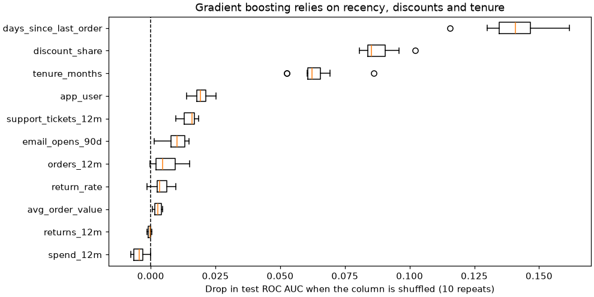
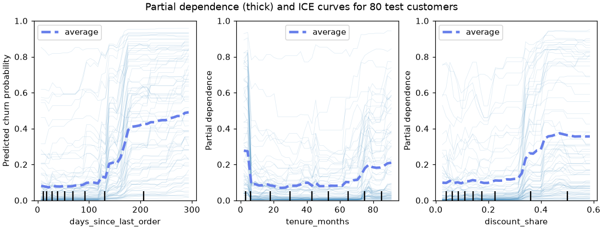

🔍 Lesson 7.1: Interpreting Models
A model that ranks customers well is useful; a model whose reasoning you can check is trustworthy. Learn three tools that show what a model learned, and the limits of each.
🎯 Learning Objectives
By the end of this lesson, you will be able to:
- Read the coefficients of a scaled logistic regression as odds ratios, and say when they mislead
- Compute permutation importance on the test set with
permutation_importanceand explain why impurity-based importance can fool you - Draw partial dependence and ICE plots with
PartialDependenceDisplayand read thresholds, curves and interactions from them - State what feature importance does and does not mean: it describes the model, not the causes of churn
In This Lesson
🧭 Why Explain a Model?
By now you can build a churn model for Pinecrest Outfitters that ranks customers far better than chance. Before the retention team acts on it, three people will ask you questions. The marketing manager asks, "What is driving churn?" The data scientist next to you asks, "Is the model using anything it should not, like a leaked column?" And a customer-care agent looking at one flagged customer asks, "Why this person?"
The first two questions are about the model as a whole: these are global explanations. The third is about one prediction: a local explanation. This lesson covers the global tools and one local view (ICE curves). Lessons 7.2 and 7.3 go deeper into local explanations with SHAP and LIME.
💡 Mental Model: The Recipe, the Taste Test and the Dial
Think of the model as a dish. Coefficients are reading the recipe: you can only do it when the recipe is short and written down, which is true for linear models. Permutation importance is a taste test: swap one ingredient for a random one and see how much worse the dish gets. It works on any dish, even one from a kitchen you cannot see into. Partial dependence is a dial: turn one ingredient up and down while keeping everything else, and watch how the taste changes.
🤔 Why This Matters
Explanations catch bugs that scores hide. A leaked column (Lesson 1.2's cancellation_reason) shows up as one feature with absurd importance. A model that leans on a proxy for a protected attribute shows up too. And a briefing that says "customers who have not ordered in about five months are where churn jumps" is something a retention team can act on; "AUC 0.86" is not.
📂 Two Models to Explain
You will explain two models trained on the same 11 numeric features: a logistic regression inside a pipeline (imputer, scaler, model) and a HistGradientBoostingClassifier, which handles the missing email_opens_90d values on its own. Using the same features for both makes the comparison fair. The categorical columns are left out to keep the explanations readable; the FAQ at the end shows how to explain a pipeline that includes them.
import numpy as np
import pandas as pd
from sklearn.model_selection import train_test_split
from sklearn.pipeline import make_pipeline
from sklearn.impute import SimpleImputer
from sklearn.preprocessing import StandardScaler
from sklearn.linear_model import LogisticRegression
from sklearn.ensemble import HistGradientBoostingClassifier
from sklearn.dummy import DummyClassifier
from sklearn.metrics import roc_auc_score
customers = pd.read_csv("data/customers_churn.csv")
features = ["tenure_months", "orders_12m", "spend_12m", "avg_order_value", "days_since_last_order",
"returns_12m", "return_rate", "support_tickets_12m", "discount_share", "app_user",
"email_opens_90d"]
X = customers[features].astype(float)
y = customers["churned"]
X_train, X_test, y_train, y_test = train_test_split(X, y, test_size=0.25, stratify=y, random_state=42)
baseline = DummyClassifier().fit(X_train, y_train)
logreg = make_pipeline(SimpleImputer(strategy="median"), StandardScaler(), LogisticRegression())
logreg.fit(X_train, y_train)
hgb = HistGradientBoostingClassifier(random_state=42).fit(X_train, y_train)
for name, model in [("baseline", baseline), ("logistic regression", logreg), ("gradient boosting", hgb)]:
auc = roc_auc_score(y_test, model.predict_proba(X_test)[:, 1])
print(f"{name:20s} test ROC AUC {auc:.3f}")Output
baseline test ROC AUC 0.500
logistic regression test ROC AUC 0.828
gradient boosting test ROC AUC 0.865Both models clearly beat the baseline's 0.500, and boosting beats logistic regression. Keep that gap in mind: by the end of the lesson you will be able to point at the patterns the linear model cannot represent.
💡 Why .astype(float)?
Most columns here are whole numbers stored as int64. Models do not care, but scikit-learn's partial dependence tools refuse integer columns, because building a grid of in-between values would silently round them. Converting once, at the start, avoids the error you will see in Common Mistakes.
⚠️ Explain the Model You Trust
Explanations describe a model, good or bad. Explaining a model that barely beats the baseline tells you about noise. Always check performance on held-out data first, as you just did, and explain on the test set where you can.
📜 Reading Coefficients
A logistic regression adds up weighted features to get the log-odds of churn. Because the pipeline scaled every feature, each weight answers the same question: "if this feature goes up by one standard deviation and the others stay the same, how much do the log-odds change?" Exponentiating a weight turns it into an odds ratio, which is easier to say out loud.
One formula is worth knowing: odds ratio = ecoef. A coefficient of 0.69 gives an odds ratio of about 2, so the odds of churn double. A coefficient of -0.69 halves them. Zero means no change.
coefs = pd.Series(logreg[-1].coef_[0], index=features)
table = pd.DataFrame({"coef": coefs, "odds_ratio": np.exp(coefs)}).sort_values("coef")
print(table.round(2))Output
coef odds_ratio
orders_12m -0.32 0.73
app_user -0.29 0.75
email_opens_90d -0.28 0.75
tenure_months -0.13 0.88
spend_12m -0.12 0.89
returns_12m -0.03 0.97
avg_order_value -0.01 0.99
return_rate 0.08 1.09
support_tickets_12m 0.40 1.50
discount_share 0.68 1.97
days_since_last_order 0.89 2.43Read the top and the bottom of the table. One standard deviation more days since the last order multiplies the odds of churn by about 2.4; a standard deviation more discount reliance by about 2. App users have lower odds (0.75 per standard deviation of a 0/1 column, which is clumsy to say; the next block fixes that). logreg[-1] is the last step of the pipeline, the fitted LogisticRegression.
"Per standard deviation" is precise but not friendly. To speak in natural units, divide each coefficient by the scaler's standard deviation for that column. Then multiply by a step that means something to the business:
scale = pd.Series(logreg[1].scale_, index=features)
per_unit = coefs / scale
print(f"days_since_last_order: sd = {scale['days_since_last_order']:.1f} days")
print(f"odds ratio per 30 more days without an order: {np.exp(30 * per_unit['days_since_last_order']):.2f}")
print(f"odds ratio for an app user vs a non-user: {np.exp(per_unit['app_user']):.2f}")Output
days_since_last_order: sd = 87.2 days
odds ratio per 30 more days without an order: 1.36
odds ratio for an app user vs a non-user: 0.55Now the sentence writes itself: every extra month without an order multiplies the odds of churn by about 1.4, and app users have roughly half the odds of non-users, other features held fixed.
⚠️ Three Ways Coefficients Mislead
- A straight line cannot bend.
tenure_monthsgets a small weight. As you will see below, churn is high for brand-new and for very long-standing customers; a single slope averages the two ends and lands near zero. - Overlapping features share credit unpredictably.
spend_12mis exactly orders times average order value. The model can put weight on any of the three, so a small coefficient on one of them does not mean "unimportant". - "Holding the others fixed" may be impossible. You cannot raise spend while holding orders and order value constant. The coefficient answers a question about customers who do not exist.
🪤 The Built-in Importance Trap
Tree ensembles such as random forests come with a feature_importances_ attribute. It is computed during training from how much each feature's splits reduced impurity (Lesson 5.1), so it is called impurity-based importance or MDI (mean decrease in impurity). It is free, fast and tempting. It also has two known flaws: it is measured on the training data, and it favors features with many distinct values, because they offer many split points to overfit with.
A simple experiment exposes it. Add a column of pure random noise, fit a forest, and see where the noise ranks.
from sklearn.ensemble import RandomForestClassifier
from sklearn.inspection import permutation_importance
rng = np.random.default_rng(42)
X_train_noise = X_train.assign(random_noise=rng.normal(size=len(X_train)))
X_test_noise = X_test.assign(random_noise=rng.normal(size=len(X_test)))
forest = RandomForestClassifier(n_estimators=200, random_state=42, n_jobs=-1)
forest.fit(X_train_noise, y_train)
mdi = pd.Series(forest.feature_importances_, index=X_train_noise.columns)
perm = permutation_importance(forest, X_test_noise, y_test, scoring="roc_auc",
n_repeats=10, random_state=42, n_jobs=-1)
compare = pd.DataFrame({"impurity (train)": mdi,
"permutation (test)": perm.importances_mean}).sort_values("impurity (train)", ascending=False)
print(compare.round(3))Output
impurity (train) permutation (test)
days_since_last_order 0.218 0.152
discount_share 0.130 0.080
tenure_months 0.125 0.057
spend_12m 0.091 0.001
avg_order_value 0.086 0.004
random_noise 0.083 0.005
return_rate 0.079 0.006
email_opens_90d 0.072 0.010
orders_12m 0.041 0.003
support_tickets_12m 0.041 0.012
app_user 0.018 0.009
returns_12m 0.016 0.001By impurity, the forest says random noise is about as important as return_rate and far more important than app_user or support_tickets_12m. That is nonsense: the noise column has nothing to do with churn. The forest used it to memorize training customers, and impurity importance rewards memorizing. The permutation column, measured on test customers, puts the noise near zero where it belongs. (Random forests in scikit-learn accept missing values, which is why email_opens_90d could stay as it is.)
✅ Rule of Thumb
Use feature_importances_ for a quick look during development, never for a conclusion. For anything you will tell someone else, use permutation importance on held-out data.
🔀 Permutation Importance
The idea fits in one sentence: shuffle one column of the test set, so it no longer lines up with the right customers, and measure how much the score drops. If the model relied on that column, scrambling it hurts. If the model ignored it, nothing changes. The model is never retrained; it is only asked to predict on damaged data. That is why the method works for any model, from logistic regression to a neural network.
sklearn.inspection.permutation_importance does this for every column, n_repeats times each with different shuffles, and returns the mean and standard deviation of the drops. Use the metric you care about: here ROC AUC, because the retention team ranks customers.
result = permutation_importance(hgb, X_test, y_test, scoring="roc_auc", n_repeats=10, random_state=42)
importance = pd.DataFrame({"mean": result.importances_mean, "std": result.importances_std},
index=features).sort_values("mean", ascending=False)
print(importance.round(3))Output
mean std
days_since_last_order 0.140 0.012
discount_share 0.088 0.006
tenure_months 0.064 0.009
app_user 0.019 0.003
support_tickets_12m 0.015 0.003
email_opens_90d 0.009 0.004
orders_12m 0.006 0.005
return_rate 0.004 0.003
avg_order_value 0.003 0.001
returns_12m -0.000 0.001
spend_12m -0.004 0.002Shuffling days_since_last_order costs the model 0.14 of AUC, which takes it most of the way from 0.86 toward the baseline. Discount reliance and tenure follow. Then there is a long tail of features worth a hundredth of AUC or less. A slightly negative value, like spend_12m's, means shuffling made no real difference and chance went the other way; read it as zero.
A chart with the spread makes the ranking easier to present. result.importances holds all ten drops per feature:
import matplotlib.pyplot as plt
order = importance.index[::-1]
drops = pd.DataFrame(result.importances.T, columns=features)[order]
fig, ax = plt.subplots(figsize=(9, 4.5), layout="constrained")
ax.boxplot(drops.to_numpy(), orientation="horizontal", tick_labels=order)
ax.axvline(0, color="black", linestyle="--", linewidth=1)
ax.set_xlabel("Drop in test ROC AUC when the column is shuffled (10 repeats)")
ax.set_title("Gradient boosting relies on recency, discounts and tenure")
plt.show()
Same Features, Different Model, Different Story
Permutation importance describes a model. Run it on the logistic regression and compare:
lr_result = permutation_importance(logreg, X_test, y_test, scoring="roc_auc", n_repeats=10, random_state=42)
side_by_side = pd.DataFrame({"boosting": result.importances_mean,
"logistic": lr_result.importances_mean}, index=features)
print(side_by_side.sort_values("boosting", ascending=False).round(3).head(6))Output
boosting logistic
days_since_last_order 0.140 0.150
discount_share 0.088 0.092
tenure_months 0.064 0.003
app_user 0.019 0.010
support_tickets_12m 0.015 0.021
email_opens_90d 0.009 0.010The boosting model gets about 0.06 of AUC from tenure; the logistic regression almost nothing. That is the coefficient warning from earlier, now measured: a straight line cannot use a U-shaped effect, so the linear model leaves that information on the table. This is a large part of the AUC gap between the two models.
⚠️ Correlated Features Split the Credit
Shuffling spend_12m costs nothing, yet spending clearly relates to churn. The reason: the model can rebuild spend from orders_12m and avg_order_value, which are still intact. When features overlap, each one alone looks unimportant. The fix is to shuffle a related group together, which you will do in the project.
🎛️ Partial Dependence and ICE
Importance says how much a feature matters. It does not say how: does more discount reliance raise or lower risk, steadily or suddenly? A partial dependence plot (PDP) turns the dial. For each value on a grid, say 30 days since the last order, it sets that column to 30 for every customer, predicts, and averages. Repeat for 60, 90 and so on, and you get a curve: the model's average answer as one feature changes and everything else stays as it was.
An ICE curve (individual conditional expectation) is the same thing for one customer, without the averaging. The PDP is the average of all the ICE curves. Plotting both shows whether the average hides customers who react differently.
from sklearn.inspection import PartialDependenceDisplay
fig, axes = plt.subplots(1, 3, figsize=(10, 3.8), layout="constrained")
PartialDependenceDisplay.from_estimator(
hgb, X_test, ["days_since_last_order", "tenure_months", "discount_share"],
kind="both", subsample=80, grid_resolution=40, random_state=42, ax=axes,
ice_lines_kw={"alpha": 0.15}, pd_line_kw={"color": "#667eea", "linewidth": 3},
)
for ax in axes:
ax.set_ylim(0, 1)
axes[0].set_ylabel("Predicted churn probability")
fig.suptitle("Partial dependence (thick) and ICE curves for 80 test customers")
plt.show()
Each panel tells a story a coefficient could not:
- Recency is a threshold. Up to roughly four months without an order, risk barely moves. Somewhere after that it jumps.
- Tenure is a U. Brand-new customers and the longest-standing ones are riskier than the middle. This is the effect the logistic regression could not use.
- Discount reliance has a kink. Flat until about 0.3, then rising.
The plots are the clearest way to see shapes; numbers are better for a briefing. The function partial_dependence returns the values behind a curve. method="brute" makes it average real predicted probabilities, like the plot:
from sklearn.inspection import partial_dependence
pd_days = partial_dependence(hgb, X_test, ["days_since_last_order"], method="brute",
custom_values={"days_since_last_order": [15, 60, 120, 150, 180, 240, 300]})
for days, p in zip(pd_days["grid_values"][0], pd_days["average"][0]):
print(f"{days:5.0f} days -> average predicted churn {p:.3f}")Output
15 days -> average predicted churn 0.077
60 days -> average predicted churn 0.077
120 days -> average predicted churn 0.095
150 days -> average predicted churn 0.214
180 days -> average predicted churn 0.390
240 days -> average predicted churn 0.443
300 days -> average predicted churn 0.490The average predicted risk roughly quadruples between 120 and 180 days. That is a concrete, checkable statement for the retention team: "reach out before a customer passes about four months without an order".
Interactions: When One Feature Changes Another's Effect
A PDP averages over everybody, so it can hide groups that behave in opposite ways. The ICE lines hint at this when they fan out. A direct check: compute the partial dependence of support tickets separately for app users and non-users.
for flag, label in [(0, "non-app users"), (1, "app users")]:
group = X_test[X_test["app_user"] == flag]
pd_tickets = partial_dependence(hgb, group, ["support_tickets_12m"], method="brute",
custom_values={"support_tickets_12m": [0, 1, 2, 3, 4, 5]})
print(f"{label:14s}", pd_tickets["average"][0].round(3))Output
non-app users [0.137 0.2 0.234 0.288 0.296 0.438]
app users [0.087 0.098 0.107 0.11 0.081 0.145]For non-app users, each extra support ticket raises predicted churn; for app users, tickets barely matter. An average over both groups would show a mild slope that describes neither. This is an interaction, and it is one reason gradient boosting beats logistic regression here: trees capture "it depends" naturally.
⚠️ The PDP Can Invent Customers
Setting spend_12m to $2,500 for a customer with one order and a $60 average order value creates a customer who cannot exist. When the feature on the dial is strongly tied to others, the PDP averages predictions on impossible rows. Check the curve against real data (a groupby of the actual churn rate by bins) before you trust the edges of the plot.
🧱 What These Tools Cannot Tell You
Every tool in this lesson answers a question about the model: what it relies on and how its predictions move. None of them answers a question about the world: what would happen if Pinecrest changed something.
App users churn less, and the model uses that. It does not follow that pushing every customer to install the app will reduce churn. Perhaps engaged customers install the app and stay, for the same underlying reason. Only an experiment (offer the app to a random half) can tell the difference. The same goes for discounts: high discount reliance predicts churn, but cutting discounts might make churn worse.
✅ How to Phrase a Finding
Say "the model relies most on recency" or "customers with long gaps since their last order are predicted to churn more". Do not say "recency causes churn". The first two are what you measured; the third needs an experiment.
⚠️ Common Mistakes
1. Integer Columns in a Partial Dependence Plot
raw = customers[features].iloc[:300]
PartialDependenceDisplay.from_estimator(hgb, raw, ["tenure_months"])Error
ValueError: The column 0 contains integer data. Partial dependence plots are not supported for integer data: this can lead to implicit rounding with NumPy arrays or even errors with newer pandas versions. Please convert numerical features to floating point dtypes ahead of time to avoid problems.What it means: the grid would include values like 41.6 months, which an integer column cannot hold, so scikit-learn refuses rather than round silently. Fix: convert numeric features to float when you build X, as this lesson does with .astype(float), and train and explain on the same X.
2. Asking a Pipeline for coef_
logreg.coef_Error
AttributeError: 'Pipeline' object has no attribute 'coef_'What it means: the pipeline is a container; the coefficients live on its last step. Fix: logreg[-1].coef_ (or logreg.named_steps["logisticregression"].coef_). The same goes for the scaler: logreg[1].scale_.
3. Measuring Importance on the Training Data
train_result = permutation_importance(hgb, X_train, y_train, scoring="roc_auc", n_repeats=10, random_state=42)
check = pd.DataFrame({"train": train_result.importances_mean, "test": result.importances_mean}, index=features)
print(check.loc[["email_opens_90d", "return_rate", "avg_order_value", "spend_12m"]].round(3))Output (no error, and that is the problem)
train test
email_opens_90d 0.026 0.009
return_rate 0.022 0.004
avg_order_value 0.019 0.003
spend_12m 0.014 -0.004What happened: on the training customers, these features look several times more important than on the test customers. The model memorized a little noise in them, and shuffling breaks the memorized patterns. On new customers that noise does not help, so the test numbers are the honest ones. Fix: compute permutation importance on held-out data.
4. Treating Importance as a Lever
A briefing says "app usage is a top-5 churn driver, so the app campaign will cut churn". What is wrong: importance shows what the model uses to predict, not what changes the outcome. Fix: report it as association, and propose a randomized test if someone wants to act on it.
5. Trusting feature_importances_
The noise experiment earlier is the whole story: impurity importance ranked a random column above real features. Fix: use permutation importance on held-out data, and add a random column as a sanity check when you are unsure.
🛠️ Project: The Churn-Drivers Briefing
Pinecrest's retention team meets on Monday and wants one page: what drives the churn model, how sure you are, and at what point each driver starts to matter. You will produce a ranked table, an importance for groups of related features, and the turning points from partial dependence, saved as churn_drivers.csv. Work in a new notebook called lesson_7_1_project. Allow about 45 minutes.
🛠️ Step 1: Load, split and train (5 min)
Start from scratch so the notebook stands alone. Train the gradient-boosting model and confirm it beats the baseline.
import numpy as np
import pandas as pd
from sklearn.model_selection import train_test_split
from sklearn.ensemble import HistGradientBoostingClassifier
from sklearn.metrics import roc_auc_score
from sklearn.inspection import permutation_importance, partial_dependence
customers = pd.read_csv("data/customers_churn.csv")
features = ["tenure_months", "orders_12m", "spend_12m", "avg_order_value", "days_since_last_order",
"returns_12m", "return_rate", "support_tickets_12m", "discount_share", "app_user",
"email_opens_90d"]
X = customers[features].astype(float)
y = customers["churned"]
X_train, X_test, y_train, y_test = train_test_split(X, y, test_size=0.25, stratify=y, random_state=42)
model = HistGradientBoostingClassifier(random_state=42).fit(X_train, y_train)
test_auc = roc_auc_score(y_test, model.predict_proba(X_test)[:, 1])
print(f"test ROC AUC {test_auc:.3f} (baseline 0.500)")Output
test ROC AUC 0.865 (baseline 0.500)🛠️ Step 2: Rank single features (5 min)
Compute permutation importance on the test set with 10 repeats. Keep the mean and the standard deviation: the spread is how sure you are.
perm = permutation_importance(model, X_test, y_test, scoring="roc_auc", n_repeats=10, random_state=42)
drivers = pd.DataFrame({"auc_drop": perm.importances_mean, "auc_drop_std": perm.importances_std},
index=features).sort_values("auc_drop", ascending=False)
print(drivers.head(6).round(3))Output
auc_drop auc_drop_std
days_since_last_order 0.140 0.012
discount_share 0.088 0.006
tenure_months 0.064 0.009
app_user 0.019 0.003
support_tickets_12m 0.015 0.003
email_opens_90d 0.009 0.004🛠️ Step 3: Shuffle related features together (15 min)
Single-feature shuffles understate overlapping features. Write a small function that shuffles a whole group of columns with the same random order, so the group's rows stay consistent with each other but no longer match the customers. Then measure three groups the team will recognize.
def group_importance(model, X, y, columns, n_repeats=10, seed=42):
rng = np.random.default_rng(seed)
base = roc_auc_score(y, model.predict_proba(X)[:, 1])
drops = []
for _ in range(n_repeats):
shuffled = X.copy()
order = rng.permutation(len(X))
shuffled[columns] = X[columns].to_numpy()[order]
drops.append(base - roc_auc_score(y, model.predict_proba(shuffled)[:, 1]))
return np.mean(drops), np.std(drops)
groups = {
"purchase volume": ["orders_12m", "spend_12m", "avg_order_value"],
"returns": ["returns_12m", "return_rate"],
"engagement": ["app_user", "email_opens_90d", "support_tickets_12m"],
}
for name, cols in groups.items():
mean, std = group_importance(model, X_test, y_test, cols)
single = drivers.loc[cols, "auc_drop"].sum()
print(f"{name:16s} group drop {mean:.3f} +/- {std:.3f} (sum of single drops {single:.3f})")Output
purchase volume group drop 0.010 +/- 0.004 (sum of single drops 0.004)
returns group drop 0.002 +/- 0.002 (sum of single drops 0.004)
engagement group drop 0.035 +/- 0.005 (sum of single drops 0.044)Shuffled together, the three purchase-volume columns matter more than the sum of their single-column drops suggests, because none of them can cover for the others any more. Engagement as a group is a real, if modest, driver. Returns stay minor.
🛠️ Step 4: Find the turning points (10 min)
For the top three single drivers, compute the partial dependence on a grid of real values (the 5th to 95th percentile of the test data) and report where the average predicted risk is lowest and highest.
rows = []
for feature in drivers.index[:3]:
grid = np.unique(np.quantile(X_test[feature].dropna(), np.linspace(0.05, 0.95, 19)).round(3))
pd_result = partial_dependence(model, X_test, [feature], method="brute", custom_values={feature: grid})
values, risk = pd_result["grid_values"][0], pd_result["average"][0]
rows.append({"feature": feature,
"lowest_risk_at": values[risk.argmin()], "lowest_risk": risk.min(),
"highest_risk_at": values[risk.argmax()], "highest_risk": risk.max()})
turning = pd.DataFrame(rows).set_index("feature")
print(turning.round(3))Output
lowest_risk_at lowest_risk highest_risk_at highest_risk
feature
days_since_last_order 18.000 0.072 293.050 0.490
discount_share 0.074 0.088 0.501 0.363
tenure_months 25.000 0.070 2.000 0.277Read the tenure row with the PDP in mind: the lowest risk is in the middle of the range, and the highest is at the newest end, the U-shape again.
🛠️ Step 5: Save the briefing (10 min)
Join the tables, save them, and print a summary that carries its own caveat.
briefing = drivers.join(turning)
briefing.round(3).to_csv("churn_drivers.csv")
top = drivers.index[0]
print(f"""Churn-drivers briefing
Model test ROC AUC : {test_auc:.3f} (baseline 0.500)
Top driver : {top} (AUC drop {drivers.loc[top, 'auc_drop']:.3f} +/- {drivers.loc[top, 'auc_drop_std']:.3f})
Risk on the {top} dial : {turning.loc[top, 'lowest_risk']:.2f} to {turning.loc[top, 'highest_risk']:.2f}
Features near zero : {', '.join(drivers.index[drivers['auc_drop'] < 0.005])}
Saved : churn_drivers.csv ({len(briefing)} rows)
Caveat : these describe what the model uses, not what causes churn.""")Output
Churn-drivers briefing
Model test ROC AUC : 0.865 (baseline 0.500)
Top driver : days_since_last_order (AUC drop 0.140 +/- 0.012)
Risk on the days_since_last_order dial : 0.07 to 0.49
Features near zero : return_rate, avg_order_value, returns_12m, spend_12m
Saved : churn_drivers.csv (11 rows)
Caveat : these describe what the model uses, not what causes churn.✅ Project Completion Checklist
- The model's test ROC AUC (0.865) is reported next to the baseline before any explanation
- Permutation importance was computed on the test set, with a mean and a standard deviation for each feature
- Your
group_importancefunction shuffles a group of columns with one shared random order - The purchase-volume group shows more importance than its single columns suggest, and you can say why
- Turning points come from partial dependence on a grid of real (percentile) values
churn_drivers.csvis saved, and the summary states that the drivers are not causes
🏋️ Hands-on Exercises
These continue in the project notebook, so model, X_test, drivers and the imports already exist.
🏋️ Exercise 1: Another Yardstick
Recompute permutation importance with scoring="average_precision" instead of ROC AUC. Does the top three change? Why might a retention team that only calls the riskiest customers prefer this metric?
💡 Hint
Change one argument. Average precision (Lesson 1.4) focuses on how well the model finds the positive class at the top of the ranking.
✅ Solution
perm_ap = permutation_importance(model, X_test, y_test, scoring="average_precision",
n_repeats=10, random_state=42)
ap_rank = pd.Series(perm_ap.importances_mean, index=features).sort_values(ascending=False)
print(ap_rank.head(5).round(3))Output
days_since_last_order 0.280
discount_share 0.149
tenure_months 0.135
support_tickets_12m 0.035
app_user 0.030
dtype: float64The same three features lead, in the same order. The drops are bigger in absolute terms because average precision moves more than AUC when the top of the ranking gets worse. Importance always depends on the metric: choose the one that matches the decision.
🏋️ Exercise 2: Remove a Redundant Feature
Retrain the model without spend_12m. Compare the test AUC with the full model's, and print the new permutation importance of orders_12m and avg_order_value. What does this tell you about the near-zero importance spend_12m had?
💡 Hint
Build a list reduced = [f for f in features if f != "spend_12m"] and fit on X_train[reduced].
✅ Solution
reduced = [f for f in features if f != "spend_12m"]
model_reduced = HistGradientBoostingClassifier(random_state=42).fit(X_train[reduced], y_train)
auc_reduced = roc_auc_score(y_test, model_reduced.predict_proba(X_test[reduced])[:, 1])
print(f"AUC with spend {test_auc:.3f}, without {auc_reduced:.3f}")
perm_reduced = permutation_importance(model_reduced, X_test[reduced], y_test, scoring="roc_auc",
n_repeats=10, random_state=42)
new = pd.Series(perm_reduced.importances_mean, index=reduced)
print(pd.DataFrame({"before": drivers["auc_drop"], "after": new}).loc[["orders_12m", "avg_order_value"]].round(3))Output
AUC with spend 0.865, without 0.867
before after
orders_12m 0.006 0.009
avg_order_value 0.003 0.002The AUC barely moves, so spend_12m added almost nothing the other two did not already carry. Near-zero importance meant "replaceable", not "unrelated to churn". Removing a redundant feature also makes the remaining importances easier to read.
🏋️ Exercise 3: Check a Curve Against Reality
The PDP says risk jumps after about four months without an order. Check this against the data itself: bin days_since_last_order in the test set at 0, 30, 90, 150, 250 and 365 days with pd.cut, and print the actual churn rate and the model's average predicted probability per bin.
💡 Hint
Build a small DataFrame with the bin, y_test and the predicted probabilities, then groupby("bin", observed=True).mean().
✅ Solution
check = pd.DataFrame({
"bin": pd.cut(X_test["days_since_last_order"], [0, 30, 90, 150, 250, 365], include_lowest=True),
"actual": y_test,
"predicted": model.predict_proba(X_test)[:, 1],
})
print(check.groupby("bin", observed=True).agg(customers=("actual", "size"), actual=("actual", "mean"),
predicted=("predicted", "mean")).round(3))Output
customers actual predicted
bin
(-0.001, 30.0] 486 0.103 0.086
(30.0, 90.0] 555 0.092 0.077
(90.0, 150.0] 210 0.133 0.128
(150.0, 250.0] 137 0.416 0.396
(250.0, 365.0] 112 0.554 0.522The real churn rate jumps between the 91 to 150 and the 151 to 250 day bins, and the model's average prediction tracks it closely. The PDP's threshold is not an artifact of the plot: the data agree. (A PDP and a groupby answer slightly different questions: the groupby lets the other features vary along with recency, the PDP holds them fixed. When they agree, you can be more confident.)
🏋️ Exercise 4: Permutation Importance by Hand (Stretch)
Without permutation_importance, compute the importance of discount_share: 10 times, shuffle that one column of X_test with rng.permutation, rescore, and average the AUC drops. Use np.random.default_rng(0). Is your number close to the library's (0.088)? Why will it not match to the last digit?
💡 Hint
It is the group_importance function from Step 3 with a one-column group. The library uses its own random number stream.
✅ Solution
rng = np.random.default_rng(0)
drops = []
for _ in range(10):
shuffled = X_test.copy()
shuffled["discount_share"] = rng.permutation(X_test["discount_share"].to_numpy())
drops.append(test_auc - roc_auc_score(y_test, model.predict_proba(shuffled)[:, 1]))
print(f"by hand: {np.mean(drops):.3f} +/- {np.std(drops):.3f}")
print(f"library: {drivers.loc['discount_share', 'auc_drop']:.3f} +/- {drivers.loc['discount_share', 'auc_drop_std']:.3f}")Output
by hand: 0.083 +/- 0.005
library: 0.088 +/- 0.006The two agree within their spread. They differ in the third decimal because the shuffles are different random orders. That spread is exactly why you report a standard deviation, and why a difference of 0.002 between two features is not a ranking you should defend.
🎯 Quick Quiz
🎯 Check Your Understanding
Question 1: A scaled logistic regression gives discount_share a coefficient of 0.65. What does that mean?
Question 2: A random forest's feature_importances_ ranks a column of random noise above app_user. What is the best explanation?
Question 3: Shuffling spend_12m alone changes the test AUC by almost nothing, but spend_12m equals orders times average order value. What should you conclude?
Question 4: What does this code compute?
quiz_pd = partial_dependence(model, X_test, ["tenure_months"], method="brute",
custom_values={"tenure_months": [3, 40, 90]})Question 5: The partial dependence of support tickets is nearly flat overall, but ICE curves fan out: some rise steeply, others stay flat. What is the most likely reason?
❓ Common Questions at This Stage
Should I compute permutation importance on the test set or a validation set?
On data the model did not train on. While you are still choosing features or models, use a validation set or cross-validation folds, so the test set stays untouched for the final score (Lesson 1.2). For the final explanation of a finished model, the test set is fine, because you are describing, not tuning.
How many repeats do I need?
Enough that the standard deviation is small compared with the gaps between features you care about. Five to ten is common. If two features are within one standard deviation of each other, do not claim one is more important than the other.
Can I use these tools on a pipeline with one-hot encoding?
Yes, and that is a strength. Call permutation_importance on the whole pipeline with the raw X: it shuffles the original home_store column, not each one-hot column separately, so you get one importance per business feature.
The PDP is in probability here, but sometimes I see negative values on the y-axis. Why?
For gradient boosting with the default method="auto", partial_dependence uses a fast tree-based shortcut that works on the model's raw score (log-odds), which can be negative. method="brute", used in this lesson, averages real predicted probabilities. The shapes are similar; the units differ.
Is a simple, interpretable model better than a black box I explain afterwards?
Sometimes. If a logistic regression is nearly as good, its coefficients are an explanation you get for free, and regulators often prefer that. Here boosting is clearly better because the true effects bend and interact, and the tools in this module make its behavior visible. Try the simple model first, and keep it if the gap is small.
🌟 Going Further: Bonus Challenge
Add cancellation_reason (the leaked column from Lesson 1.2) to the features with a one-hot encoder in a pipeline, retrain, and compute permutation importance on the raw columns. How does the leak show up, and how could a routine importance check in your workflow have caught it before deployment?
📓 Learning Journal
Take five minutes to write in your learning journal (the journal.md file you started in Lesson 0.1, or a paper notebook). Jot down:
- Key concepts you learned today
- Techniques that clicked (and the ones that have not, yet)
- Questions or confusion to come back to
- Ideas to try on your own
- Progress and feelings: how did this lesson go for you?
✍️ This lesson's prompt: Write the three sentences you would say to Pinecrest's retention team about what drives the churn model. Then write the one sentence you would add so that nobody leaves the meeting thinking the model has found the causes of churn.
📝 Lesson Summary
🎓 Key Takeaways
- Global explanations describe the whole model; local ones explain a single prediction
- Scaled logistic-regression coefficients are changes in log-odds per standard deviation;
np.expturns them into odds ratios - Coefficients miss curves and interactions, and overlapping features share credit unpredictably
- Impurity-based
feature_importances_is computed on training data and can rank pure noise above real features - Permutation importance measures the drop in a held-out score when one column (or a group) is shuffled; it works for any model
- Partial dependence shows how the average prediction changes along one feature; ICE curves show it per customer and reveal interactions
- All of these describe the model, not cause and effect in the world
🏆 What You've Accomplished
- You turned coefficients into plain-language odds statements
- You exposed the impurity-importance trap with a noise column
- You measured which features the churn model relies on, with error bars, and why the linear model falls behind
- You found a threshold, a U-shape and an interaction from partial dependence and ICE curves
- You wrote a grouped-importance function and produced a churn-drivers briefing
🔭 Looking Ahead
In Lesson 7.2: SHAP Values you will move from "what does the model rely on overall" to "why did it flag this customer". SHAP splits each prediction into exact contributions from every feature, using an idea from game theory, and its summary plots combine importance and direction in one picture.
📋 Before the Next Lesson
- Keep your project notebook: Lesson 7.2 explains the same gradient-boosting model.
- Pick the riskiest test customer (
model.predict_proba(X_test)[:, 1].argmax()) and look at their feature values. Guess which three features push their risk up most; you will check your guess in 7.2.
🌱 Encouragement for the Journey
You can now open a model up and check its reasoning, which many people who train models never do. If the difference between "the model uses this" and "this causes that" still feels slippery, that is normal: experienced analysts mix them up in meetings every week. Noticing it is the skill, and you have started practicing it.